승강기기사 (2011-10-02 기출문제)
1과목: 승강기 개론
1. 기계실의 조명 및 환기시설에 관한 설명으로 옳은 것은?
- 조명스위치는 기계실 어디든지 조작하기 쉽도록 설치하면된다.
- 조도는 기기가 배치된 바닥면에서 80Lux 이상이어야 한다.
- 조명전원은 엘리베이터의 제어전원과 별도로 분리하여야 한다.
- 자연환기하는 경우에 환기창 또는 루버 등의 합산한 크기는 기계실 바닥면적의 1/10 이상이어야 한다.
(정답률: 83%)

2. 교류엘리베이터의 제어방식이 아닌 것은?
- VVVF 제어
- 워드레오나드 제어
- 교류귀환 제어
- 교류일단 속도 제어
(정답률: 85%)
3. 유입완충기가 비상작동되어 플런저를 완전히 압축시킨 상태에서 완전복귀 시간까지 소요되는 시간을 몇 초이내로 제한하고 있는가?
- 30
- 60
- 90
- 120
(정답률: 70%)
4. 견인비(Traction ratio)의 선정 방법은
- 무부하시와 전부하시의 값이 가능한 한 같도록 하고 그 절대값이 적을수록 좋다.
- 무부하시와 전부하시의 값의 차를 크게 하고 그 값도 가능한 크게한다.
- 균형비 값은 커야하고 무부하시와 전부하시의 값은 동일해야 한다.
- 균형비 값은 적어야 하고 무부하시와 전부하시의 값은 고려하지 않는다.
(정답률: 82%)
5. 일반적으로 카틀(CAR FRAME)에는 브레이스 로드(BRACE ROD OR SIDE BRABE)를 설치한다. 이 브레이스 로드로 인하여 하부체대에 받는 힘의 어느 정도가 카주 또는 상부체대에 분포되는가?
- 1/8
- 3/8
- 1/5
- 3/5
(정답률: 82%)
6. 가이드 레일에 대한 설명으로 틀린 것은>?
- 비상정지장치가 작동하는 곳에는 정밀가공한 T자형의 레일이 사용된다.
- 레일 규격의 호칭은 가공 완료된 1m당의 중량을 표시한 것이다.
- 레일의 표준길이는 5m 이다
- 균형추측 레일에는 강판성형한 레일을 사용할 수도 있다.
(정답률: 64%)
7. 엘리베이터를 3~8대 병설할 때에 각 카를 불필요한 동작없이 합리적으로 운행관리하는 조작방식은?
- 군승합자동식
- 군관리 방식
- 자동식
- 범용방식
(정답률: 82%)
8. 승객용 엘리베이터의 카내에서 정전시 예비조명장치의 조도에 대한 내용으로 옳은 것은?(관련 규정 개정전 문제로 여기서는 기존정답인 2번을 누르면 정답 처리 됩니다. 자세한 내용은 해설을 참고하세요.)
- 정전시에 램프중심으로부터 1.5m 떨어진 수직면상에서 측정하여 1Lux 이상의 조도를 확보해야한다.
- 정전시에 램프중심으로부터 2m 떨어진 수직면상에서 측정하여 1Lux 이상의 조도를 확보해야한다.
- 정전시에 램프중심으로부터 1.5m 떨어진 수직면상에서 측정하여 10Lux 이상의 조도를 확보해야한다.
- 정전시에 램프중심으로부터 2m 떨어진 수직면상에서 측정하여 10Lux 이상의 조도를 확보해야한다.
(정답률: 79%)
9. 카 바닥 앞부분과 승강로 벽과의 수평거리는 몇 [mm] 이하이어야 하는가?(관련 규정 개정전 문제로 여기서는 기존 정답인 2번을 누르면 정답 처리됩니다. 자세한 내용은 해설을 참고하세요.)
- 100
- 125
- 140
- 150
(정답률: 79%)
10. 정지 레오나드 방식에서 정지형 반도체 소자를 이용하여 교류를 직류로 전환시킴과 동시에 무엇을 제어하여 직류 전압을 변화 시키는가?
- 점호각
- 주파수
- 전압
- 전류
(정답률: 78%)
11. 제동기에 대한 설명으로 옳은 것은?(관련 규정 개정전 문제로 여기서는 기존 정답인 4번을 누르면 정답 처리됩니다. 자세한 내용은 해설을 참고하세요.)
- 승객용 엘리베이터는 120%의 부하로 전속하강 중 위험없이 감속정지 할 수 있어야 한다.
- 화물용 엘리베이터는 125%의 부하로 전속하강 중 위험없이 감속정지 할 수 있어야 한다.
- 제동력은 전원이 흐르는 사이에 전자코일에 의해 주어진다.
- 제동력을 너무 크게 하면 감속도가 크게 된다.
(정답률: 66%)
12. 최대 굽힘모멘트 390000[kg· cm], 사용재료 H250 x 250 x 14 x 9(단면계수 867[cm3])인 기계대의 안전율은 약 얼마인가? (단, 재질의 허용응력은 4000[kg/[cm2]이다)
- 6
- 9
- 11
- 15
(정답률: 46%)
13. 승강장 도어에 대한 설명으로 옳은 것은
- 승강장 도어의 비상키는 기준층에만 설치하면 된다.
- 중앙 개폐방식의 도어는 닫힌 상태에서 금속부분 사이의 거리가 없어야 한다.
- 승강장 도어와 문틀 사이의 여유거리는 6mm이상 이어야 한다.
- 도어는 출입구의 위와 양쪽 옆, 그리고 상호간에 겹쳐야 한다.
(정답률: 61%)
14. 엘리베이터의 카를 휴지 및 재가동시킬 목적으로 설치하는 부속 장치는?
- 파킹스위치
- 강제정지스위치
- 비상정지스위치
- 스로다운스위치
(정답률: 77%)
15. 에스컬레이터 적재하중을 산출하는데 필요한 사항이 아닌 것은?
- 디딤판(스템)의 폭
- 층고
- 반력점간거리
- 디딤판(스템)의 수평 투영단면적
(정답률: 78%)
16. 완충기의 행정은 정격속도의 115% 속도로 적용범위의 중량을 충돌시킨 경우 카 또는 균형추의 평균 감속도는 얼마 이하인가? 또한 순간 최대 감속도는 2.5g(가속도)를 넘는 감속도가 몇 초 이상 지속하지 않아야 하는가?
- 0.8g 이하, 0.04초
- 1.0g 이하, 0.04초
- 1.5g 이하, 0.4초
- 2.5g 이하, 0.4초
(정답률: 74%)
17. 기계식주차장치안에서 자동차를 입· 출고 하는 사람이 출입하는 통로의 너비와 높이가 맞는 것은?
- 너비:30cm이상, 높이:1.6m 이상
- 너비:50cm이상, 높이:1.8m 이상
- 너비:60cm이상, 높이: 2m 이상
- 너비:80cm이상, 높이: 2m 이상
(정답률: 72%)
18. 유압 엘리베이터의 VVVF 속도제어에 대한 설명으로 옳지 않은 것은?
- 로프식 엘리베이터와 동일한 주행곡선이 얻어진다.
- 기동· 정지시 쇼크가 없이 원활하고 정지는 바로 착상 하게 된다.
- 유량제어 밸브를 사용하지 않으므로 작동유의 온도변화 및 압력변화에 영향을 받는다.
- 상승 운전시 필요한 유량을 펌프에서 토출하므로 낭비가 없다.
(정답률: 58%)
19. 승객용 엘리베이터의 브레이크 성능을 알아보기 위하여 일정한 부하를 싣고 전속하강중인 카를 안전하게 감속 및 정지시킬 수 있는지를 확인하려고 한다. 몇 % 의 부하를 실어야 하는가?
- 100
- 110
- 115
- 125
(정답률: 73%)
20. 조속기의 로프 및 도르래의 구비조건 중 틀린 것은?
- 조속기 로프의 공칭지름은 최소 6mm 이상이어야 한다.
- 조속기 도드래의 피치지름과 로프의 공칭지름의 비는 30배 이상이어야 한다.
- 속기 로프는 비상정지장치로부터 분리시킬 수 없어야 한다.
- 조속기의 캣치가 작동되었을 대 조속기로프가 갖추어야할 인장력은 300N이상이어야 한다.
(정답률: 64%)
2과목: 승강기 설계
21. 재해시 관제운전의 우선순위로 맞는 것은?
- 지진식 관제-> 화재시 관제 -> 정전시 관제
- 화재시 관제-> 지진시 관제 -> 정전시 관제
- 지진시 관제-> 정전시 관제 -> 화재시 관제
- 화재시 관제-> 정전시 관제 -> 지진시 관제
(정답률: 81%)
22. 엘리베이터의 각종 상태에 대한 비상운전에의 전환 가능성을 설명한 것이다. 틀린것은?
- 카내 비상스위치가 조작되어 있더라도 비상호출 운행은 가능하다.
- 내부 운전 휴지스위치가 동작되어 있더라도 비상호출 운행은 가능하다.
- 파킹 스위치가 동작되어 있더라도 비상호출운행은 가능하다.
- 지진관제에 의해 정지 중인 경우, 비상호출운행은 불가능하다.
(정답률: 50%)
23. 가이드레일에 관한 설명 중 틀린것은?
- 가이드레일의 표준길이는 5m 이다
- 균형추에 비상정지장치를 설치할 경우 5K 가이드레일은 적합하지 않다.
- 가이드레일의 규격에 대한 기준은 단위 길이당 중량으로 표시한다.
- 가이드레일은 엘리베이터 운행속도와 관계가 밀접하다.
(정답률: 55%)
24. 전기자에 전류가 흐르면 그 전류에 대한 자속이 발생해 주 자극의 자속에 영향을 미쳐 주자속이 감소하고, 전기자 중성점이 이동하는 현상을 일으키는데, 이것을 무엇이라 하는가?
- 자속 반작용
- 주 자극 반작용
- 전류 반작용
- 전기자 반작용
(정답률: 68%)
25. 그림과 같은 보의 지점반력 RA, RB 는 각각 몇 kg 인가?
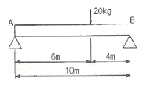
- RA=4, RB=8
- RA=12, RB=8
- RA=8, RB=12
- RA=8, RB=4
(정답률: 56%)
26. 승강기에 대한 주요 부품 중 설치 위치가 다른 한 가지는?
- 균형추
- 이동케이블
- 가이드레일
- 조속기
(정답률: 79%)
27. 승강기검사기준에서 정하는 에스컬레이터의 경사도가 30˚이하 이고 층고가 6m 이하 일 경우 속도 규정은? (단, 디딤판의 수가 3개 이상인 경우이다. )
- 30m/min 이하
- 40m/min 이하
- 50m/min 이하
- 60m/min 이하
(정답률: 60%)
28. 엘리베이터의 전원설비를 설계할 때 사용되는 부등률에 대한 설명으로 틀린 것은?
- 여러 대의 엘리베이터에 일괄적으로 전원을 공급하는 경우, 변압기의 용량은 부등률을 곱하여 저감시킬 수 있다.
- 사용 빈도가 크면 부등률이 크고 사용 빈도가 작으면 부등률도 작다.
- 비상용 엘리베이터는 100% 동시 사용으로 본다.
- 부등률은 엘리베이터의 기동 빈도와는 관계가 없다.
(정답률: 60%)
29. 엘리베이터용 도어머신에서 요구되는 사항과 관련이 없는 것은?
- 작동이 원활하고 소음이 발생하지 않을것
- 카상부에 설치하기 위하여 소형 경량일 것
- 가격이 고가일 것
- 동작회수가 엘리베이터의 기동회수의 2배가 되므로 보수가 용이할 것
(정답률: 75%)
30. 엘리베이터의 승강로에 관하여 틀린 것은?(오류 신고가 접수된 문제입니다. 반드시 정답과 해설을 확인하시기 바랍니다.)
- 비상용엘리베이터의 승강로는 전층 단일구조로 연결하여야 한다.
- 꼭대기 틈새란 카가 정지했을 때 상부체대의 윗면에서 승강로 천정 사이의 수직거리이다.
- 정격속도가 90m/min인 로프식 엘리베이터의 꼭대기 틈새는 1.6cm 이상이면 된다.
- 로프식 엘리베이터의 오버헤드는 출입구 높이+꼭대기 틈새이다.
(정답률: 46%)
31. 60Hz, 4극 전동기의 슬립이 5%인 경우 전부하 회전수는 몇 rpm 인가?
- 1710
- 1890
- 3420
- 3780
(정답률: 61%)
32. 그림은 로프식 승강기의 로핑 방법을 나타낸 것이다.
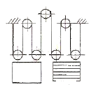
- 1:1 로핑
- 2:1로핑
- 3:1 로핑
- 4:1로핑
(정답률: 71%)
33. 다음 중 엘리베이터 진동의 발생 원인으로 잘못된 것은?
- 동기 : 회전저항에 의한 진동
- 감속기 : 기어 맞물림 진동
- 출입문 : 습동부와 회전부의 진동
- 가이드 레일 : 레일 접합부 통과시 진동
(정답률: 52%)
34. 기계대 강도 계산시 작용하는 하중에 포함되지 않는 것은?
- 기계대 자중
- 권상기 자중
- 로프자중
- 균형추 자중
(정답률: 66%)
35. 비상정지장치의 성능 시험과 관계가 없는 것은?
- 적용중량
- 가이드 레일의 규격
- 적용 작동속도
- 정지거리
(정답률: 79%)
36. 다음중 엘리베이터의 조명전원 설비로 볼 수 없는 것은?
- 카내 형광등 전원
- 기계실 형광등 전원
- 카 상부 환기용 팬(FAN) 전원
- 카 상부 점검용 콘센트(Receptacle)전원
(정답률: 52%)
37. 엘리베이터의 일주시간을 계산할 때 고려되는 사항이 아닌 것은?
- 기준층 복귀시간
- 주행시간
- 도어계폐시간
- 승객 출입시간
(정답률: 63%)
38. 아래 그림의 복활차에서 W=1000kg 일 때, 당기는 힘 P는 몇 kg 인가?
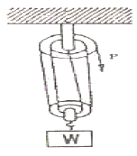
- 1000
- 200
- 500
- 250
(정답률: 60%)
39. 엘리베이터의 정격속도가 60m/min 이다. 이때 꼭대기큼새 및 피트 깊이의 규정으로 맞는 것은?
- 꼭대기틈새 : 1.2m. 피트깊이 : 1.2m
- 꼭대기틈새 : 1.2m. 피트깊이 : 1.5m
- 꼭대기틈새 : 1.4m. 피트깊이 : 1.5m
- 꼭대기틈새 : 1.5m. 피트깊이 : 1.4m
(정답률: 49%)
40. 기게실에 설치할 수 있는 설비로 적합한 것은?
- 급배수설비
- 피뢰침선
- 변압기
- 비상 방송용 스피커
(정답률: 63%)
3과목: 일반기계공학
41. 다이캐스팅(die casting)주조법의 특징에 대한 설명으로 맞는 것은?
- 다품종 소량 생산에 적합하다.
- 제품의 크기에 제한을 받지 않는다.
- 용융점이 높은 금속은 주조가 곤란하다.
- 주물의 표면이 거칠고, 치수 정밀도가 낮다.
(정답률: 55%)
42. 다음 중 축에 삼각형의 작은 이를 만들어 축과 보스를 고정시킨 키의 일종인 것은?
- 월뿔 키
- 페더키
- 반달 키
- 세레이션
(정답률: 49%)
43. 다음 중 펌프를 분류할 때 용적형에 속하는 것은?
- 왕복식
- 원심식
- 축류식
- 사류식
(정답률: 65%)
44. 용접이음이 리벳이음에 비하여 우수한 점이 아닌 것은?
- 기밀성이 좋다.
- 재료를 절감시킬 수 있다.
- 잔류 응력을 남기지 않는다.
- 가공 모양을 자유롭게 할 수 있다.
(정답률: 66%)
45. 선반에서 사용하는 단동척을 가장 바르게 설명한 것은?
- 조(jaw)가 4개이며 조가 각각 움직이므로 불규칙한 형상의 가공물의 고정에 사용한다.
- 조(jaw)가 3개이며 원형, 정다각형의 가공물을 물리는데 편리하며 조가 마모되면 정밀도도 저하된다.
- 콜릿을 이용하여 자동선반, 터릿선반, 시계선반 등에 사용되는 척이다.
- 전자석을 이용하여 장, 탈착이 쉽도록 하여 대량생산에 주로 사용되는 척이다.
(정답률: 65%)
46. 한 개 또는 여러 개의 회전자에 의하여 액체에 원심력을 주거나 압력을 일으켜 양수하는 펌프는?
- 피스톤 펌프
- 기어 펌프
- 원심 펌프
- 마찰 펌프
(정답률: 75%)
47. 굽힘모멘트 45000N · mm 을 받는 연강재 축 (solid shaft)의 지름은 약 몇 mm 인가? (단, 이 때 발생한 굽힘응력 σb는 5N/mm 이다. )
- 35.8
- 45.1
- 56.8
- 60.1
(정답률: 47%)
48. 전위기어를 사용하는 장점이 아닌 것은?
- 언더컷 방지
- 이의 강도를 증대
- 베어링 압력을 증대
- 원하는 축간거리의 조절 가능
(정답률: 57%)
49. 회전축은 분당 1000 회전으로 100 kW의 회전력을 전달한다. 굽힘 모멘트 200N · m 를 받을 때 상당 비틀림 모멘트는 몇 N · m 인가?
- 925.9
- 955.4
- 975.7
- 995.1
(정답률: 49%)
50. 보통 주철에 대한 설명으로 틀린 것은?
- 흑연의 모양 및 분포에 따라 기계적 성질이 좌우된다.
- 가단 주철과 칠드 주철이 이에 속한다.
- 인장강도는 100~196 MPa 정도이다.
- 기계 가공성이 좋고 값이 싸다.
(정답률: 57%)
51. 평벨트의 두께 x 나비가 5mm x 80mm 이고, 허용인장응력이 2MPa 일 때, 7.5m/s의 속도로 운전하면 전달할 수 있는 최대동력은 약 몇 kW인가? (단, 원심력은 무시하고, 장력비는 eμ⍬=2.0 이다)
- 1.5
- 3.0
- 6.0
- 7.5
(정답률: 36%)
52. 애크미(Acme) 나사라고도 하며 공작기계의 이송용, 선반의 리드, 나사 프레스, 바이스 등에 사용되는 나사는?
- 둥근나사
- 사각나사
- 사다리꼴나사
- 톱니나사
(정답률: 63%)
53. 속도비 i=0.2 이고 기어 잇수가 ZA=16, Zc=10, 2ZB=ZD 일때 ZB 와 ZD 는?
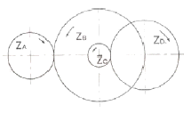
- ZB=10, ZD=20
- ZB=20, ZD=40
- ZB=10, ZD=30
- ZB=20, ZD=60
(정답률: 56%)
54. 지름 60mm 의 축이 500 rpm 으로 회전하여 동력을 전달하고, 축의 허용전단응력이 100/N cm2일 때 최대허용 전달 동력은 약 몇 kW 인가?
- 2.22
- 3.24
- 3.63
- 3.87
(정답률: 38%)
55. 배관시스템에서 공동현상(cavitation) 발생에 따른 결과로 나타나는 현상이 아닌 것은?
- 소재의 손상
- 기포 발생 저하
- 소음 진동의 발생
- 제어 특성의 저하
(정답률: 62%)
56. 강에 인성을 부여하여 신율 및 충격치를 개선시키는 것이 주목적인 열처리 방법은?
- 뜨임
- 불림
- 풀림
- 담금질
(정답률: 55%)
57. 재료가 인장을 받을 경우 변형 전.후의 체적변화가 없다고 가정할 때 프와송비 (Poisson's ratio)는 ( )보다 작아야 한다. ()안에 맞는 수치는 ?
- 0.1
- 0.3
- 0.5
- 1.0
(정답률: 65%)
58. 선삭작업에서 공구의 바이트에 크레이터 마멸이 발생하는 위치는?
- 옆날
- 상면 경사면
- 전면 여유면
- 측면 여유면
(정답률: 56%)
59. 탄소강의 열처리 중에서 담금질에 관한 설명으로 올바른 것은?
- 잔류응력을 제거하는 작업으로 어닐링이라고도 한다.
- A1변태점 이상의 온도에서 가열한 후 물 등에 급랭시켜 경도를 높이는 작업이다.
- 경도를 낮추고 인성을 부여하는 작업으로 노멀라이징이라고도 한다.
- A1변태점 이하의 온도에서 가열한 후 냉각하여 인성을 높이는 작업이다.
(정답률: 63%)
60. 외접 원통마찰차의 축간거리가 300mm, 원동차의 회전수가 200rpm, 종동차의 회전수가 100rpm 일 때 원동차의 지름(D1)과 종동차의 지름(D2)는 각각 몇 mm 인가?
- D1=400, D2=200
- D1=200, D2=400
- D1=200, D2=100
- D1=100, D2=200
(정답률: 55%)
4과목: 전기제어공학
61. 논리식
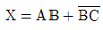
에서 작동 설명이 잘못된 것은?- A=1, B=0, C=1 이면 X=1 이다
- A=1, B=1, C=0 이면 X=1 이다
- A=0, B=0, C=0 이면 X=0 이다
- A=0, B=0, C=1 이면 X=1 이다
(정답률: 60%)
62. PLC(Programmable Logic Controller) CPU부의 구성과 거리가 먼 것은?
- 데이터 메모리부
- 프로그램 메모리부
- 연산부
- 전원부
(정답률: 60%)
63. 특정 방정식의 s3+2s2+Ks+5=0으로 주어지는 제어계가 안정하기 위한 K 값은?
- K>0
- K<0
- K>5/2
- K<5/2
(정답률: 53%)
64. 내부저항 r인 전류계의 측정범위를 n배로 확대하려면 전류계에 접속하는 분류기 저항값은?
- r/n
- r/(n-1)
- (n-1)r
- nr
(정답률: 63%)
65. 제어 결과로 사이클링(cycling)과 옵셋(offset)을 발생시키는 동작은?
- on-off 동작
- P동작
- I 동작
- PI 동작
(정답률: 73%)
66. 저항체에 전류가 흐르면 줄열이 발생하는데 이때 전류 I 와 전력 P의 관계는?
- I=P
- I=P0.5
- I=P1.5
- I=P2
(정답률: 49%)
67. 평행한 두 도체에 같은 방향의 전류를 흘렸을 때 두 도체 사이에 작용하는 힘은 어떻게 되는가?
- 반발력
- 힘이 작용하지 않는다.
- 흡인력
- 2/2πr의 힘
(정답률: 56%)
68. 전동기 2차측에 기동저항기를 접속하고 비례추이를 이요하여 기동하는 전동기는?
- 2중 농형 유도 전동기
- 권선형 유도 전동기
- 단상 유도전동기
- 2상 유도전동기
(정답률: 56%)
69. 제어계의 전달(transfer function)에 대한 설명 중 옳지 않은 것은?
- 모든 초기값을 0으로 한다.
- 시간(t)함수에 대한 입력 및 출력신호의 비이다.
- 선형 제어계에서만 정의된다.
- t<o 에서는 제어계가 정지 상태를 의미한다.
(정답률: 38%)
70. 발전기의 유기 기전력의 방향을 알기위한 법칙은?
- 렌츠의 법칙
- 패러데이의 법칙
- 플레밍의 왼손법칙
- 플레밍의 오른 법칙
(정답률: 59%)
71. 일정 전압의 직류전원에 저항을 접속하고 정격전류를 흘 때의 전류보다 30%의 전류를 증가시키면 소요되는 저항값은 약 몇 배가 되는가?
- 0.60
- 0.77
- 1.30
- 3.0
(정답률: 54%)
72. 단상변압기 3대를 △결선하여 부하에 전력을 공급하다가 1대의 고장으로 V 결선하여 사용하는 경우 공급할 수 있는 전력은 고장 전과 비교하면 약 몇 [%]가 되는가?
- 57.7%
- 66.7%
- 5.0%
- 86.6%
(정답률: 52%)
73. 변압기유의 열화방지 방법 중 맞지 않는 것은?
- 밀봉방식
- 흡착제 방식
- 수소 봉입 방식
- 개방형 콘서베이터
(정답률: 51%)
74. 그림과 같은 블록선도에서 X3/X1는?
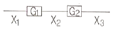
- G1G2
- 1/G1G2
- G2/G1
- G1/G2
(정답률: 64%)
75. 제어장치가 제어대상에 가하는 제어신호로서 제어장치의 출력인 동시에 제어대상의 입력인 신호는?
- 조작량
- 제어량
- 목표량
- 이득량
(정답률: 53%)
76. 다음 중 발열체의 구비조건으로 적절하지 않은 것은?
- 내열성이 클것
- 용융온도가 높을것
- 고온에서 기계적 강도가 클 것
- 산화온도가 낮을 것
(정답률: 66%)
77. 과도 응답의 소멸되는 정도를 나타내는 감쇠비(decayratio)는?
- 제2오버슈트/최대 오버슈트
- 제2오버슈트/제3 오버슈트
- 제3오버슈트/제2 오버슈트
- 최대 오버슈트/제2 오버슈트
(정답률: 50%)
78. 그림에서 R1 = 1000Ω, R2 = 100Ω, R3 = 800Ω 일때 검류계 G 의 지시가 0 이 되었다 저항 R4 는 몇Ω인가?
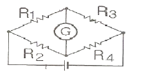
- 80
- 160
- 240
- 320
(정답률: 49%)
79. RLC 병렬회로에서 유도성회로가 되기 위한 조건은?(오류 신고가 접수된 문제입니다. 반드시 정답과 해설을 확인하시기 바랍니다.)
- XL > XC
- XL < XC
- XL = XC
- XL XC = R
(정답률: 39%)
80. 피상전력이 Pa[kVA]이고 무효전력이 Pr[kvar] 인 경우 유효전력 P[kW]를 나타낸 것은?
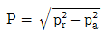
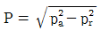
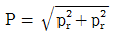
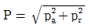
(정답률: 50%)